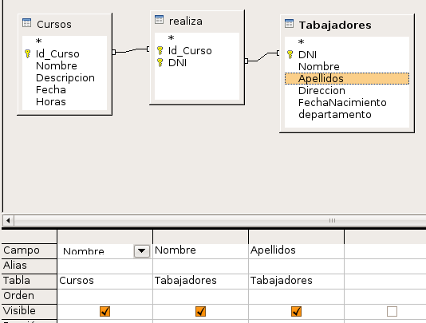
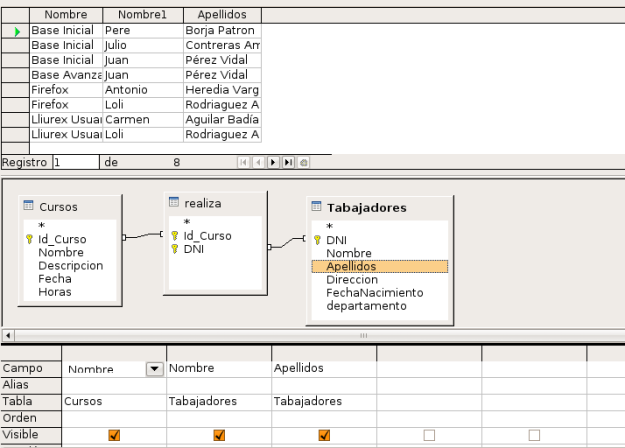
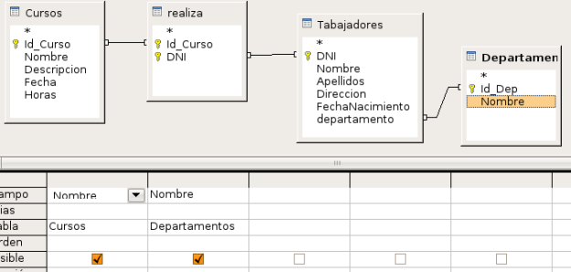
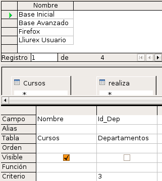
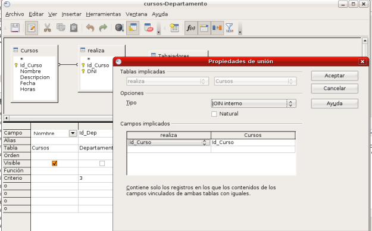

En este apartado veremos como crear consultas que obtengan datos de varias tablas que estén relacionadas.
Bases de Datos
4.2.5. Consultas sobre varias tablas
Práctica guiada
Vamos a realizar diferentes tipos de consultas sobre la base de datos Empresa que diseñamos en el tema 2.
Los pasos a seguir son:
1. Abre el fichero Empresa.odb
2. Haz clic en la opción Crear consulta en vista Diseño y añade las siguientes tablas: Cursos, Realiza y Trabajadores. Como puedes comprobar en la figura siguiente, al estar definidas las relaciones previamente, OpenOffice Base ya muestra los campos que se encuentran enlazados.

3.Vamos acrear una consulta para obtener una relación de cursos y los trabajadores que están inscritos en cada uno de ellos. En la figura siguiente puedes ver cómo se crea la consulta:

4. El resultado es el de la siguiente figura. Guarda la consulta con el nombre cursos-trabajador.

Ahora vamos a crear otra consulta diferente:
2. Incluye todas las tablas en la consulta.
3. Vamos acrear una consulta para obtener una relación de cursos y los trabajadores que están inscritos en cada uno de ellos. En la figura siguiente puedes ver cómo se crea la consulta:

4. El resultado es el de la siguiente figura. Guarda la consulta con el nombre cursos-departamento-recuros-humanos.

Vinculación de Registros
Después de añadir las tablas a la consulta, existe la posibilidad de configurar la forma en la que se vincularán los registros para mostrar la información que necesitas en cada caso. Para ello hay que hacer doble clic sobre la línea que representa la relación entre las dos tablas y tendremos acceso al cuadro de diálogo que aparece en la figura siguiente:

Las opciones en la lista desplegable Tipo son:
- JOIN Interno: El resultado muestra sólo los registros en los que el campo vinculado de ambas tablas sea el mismo.
- JOIN Izquierdo: En este caso, el resultado muestra todos los registros de la tabla izquierda, y sólo aquellos de la tabla derecha donde coincida el campo vinculado.
- JOIN Derecho: Con este modelo ocurriría justo lo contrario, aparecerían todos los registros de la tabla derecha y sólo aquellos de la tabla izquierda en los que coincidan los campos vinculados.
- JOIN Completo: Muestra todos los registros de ambas tablas.